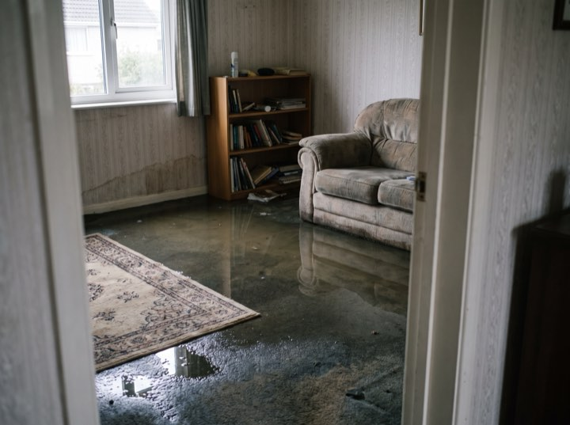
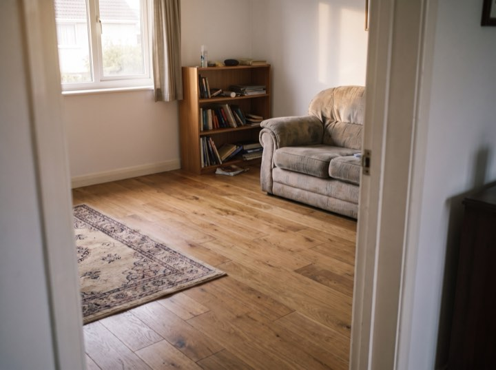
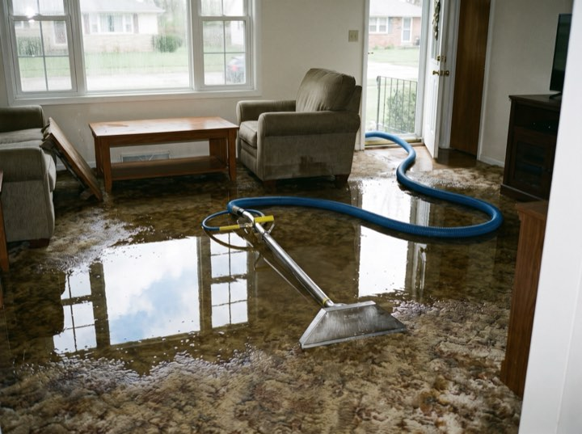
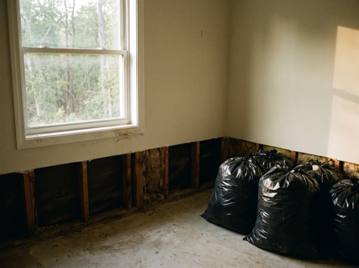
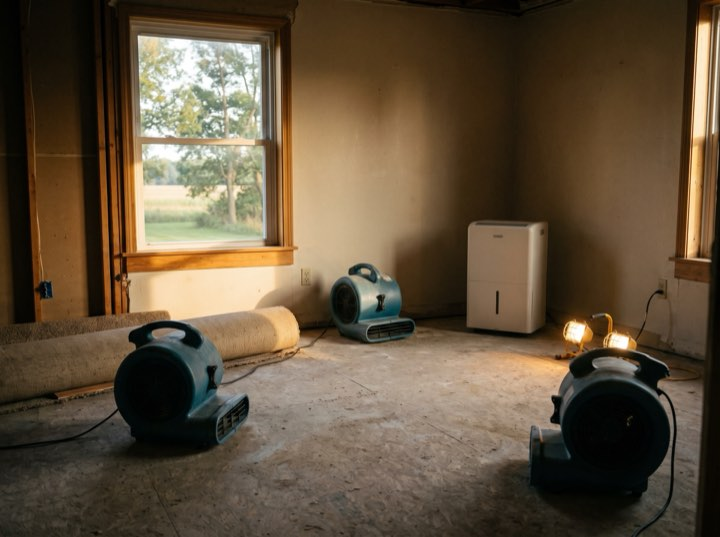

Water · Fire · Mould · 24/7
Emergency water, fire and mould restoration with a sixty-minute metro response. If a crew is not going to make the hour, you get a call before the hour is out rather than an apology afterwards.
Services
The first sixty minutes decide how much of the floor survives. Everything about how we are set up follows from that.
Truck-mounted extraction, commercial air movers and moisture mapping so we can prove the structure is genuinely dry, not just dry-feeling.
Soot removal, odour neutralisation and contents cleaning. Smoke damage travels far further than the fire itself.
Containment, HEPA filtration and post-remediation verification by an independent hygienist so the clearance means something.
Board-up, tarping and full structural drying. We mobilise extra crews before a forecast storm rather than after it.
Results
“Answered at 2am and were here inside the hour.”Ruth E.Basement flood
“Handled the adjuster completely. That was worth everything.”Sam I.Kitchen fire
“Independent clearance test at the end. No arguing about it later.”Priya M.Mould remediation
“Showed us moisture readings daily until it was actually dry.”Owen L.Storm damage
Process
You are dealing with a disaster and an insurer at the same time. We take the second one off you.
A person answers and gives you an arrival time in minutes. If it slips, we ring you. We do not let you sit and wonder.
Stop the source, extract standing water, tarp or board up. The first hours decide the size of the claim.
Full photographic scope and moisture log, submitted to your carrier. We bill them direct and meet the adjuster on site.
Daily readings until verified dry, then reconstruction. You get the log, so nothing is disputed months later.
Inside the hour
Extraction starts the minute the truck stops. The room is stripped to the flood line and drying by the end of the first visit.





Do not wait for business hours. Every hour standing water sits, the cost and the damage climb. Crews are on call this minute.
We work with all major insurers and bill direct. Free emergency assessment.